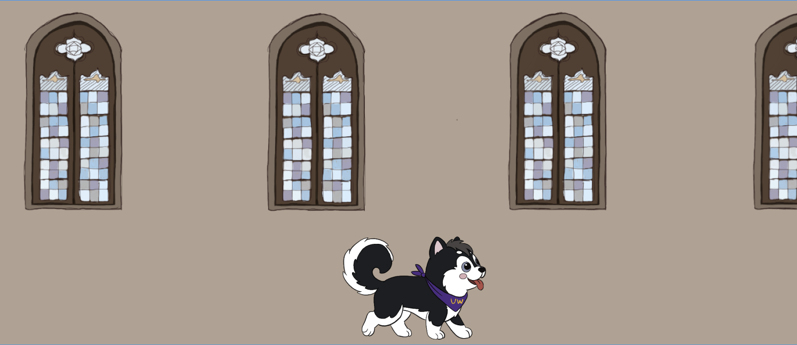
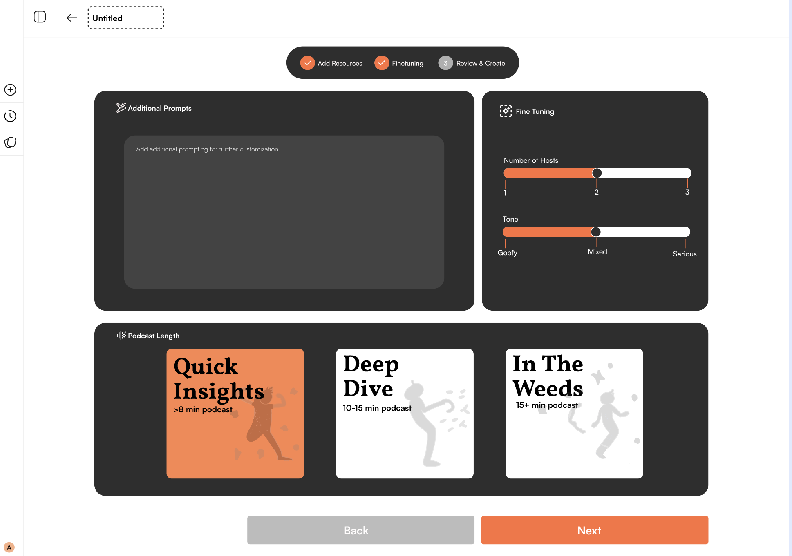
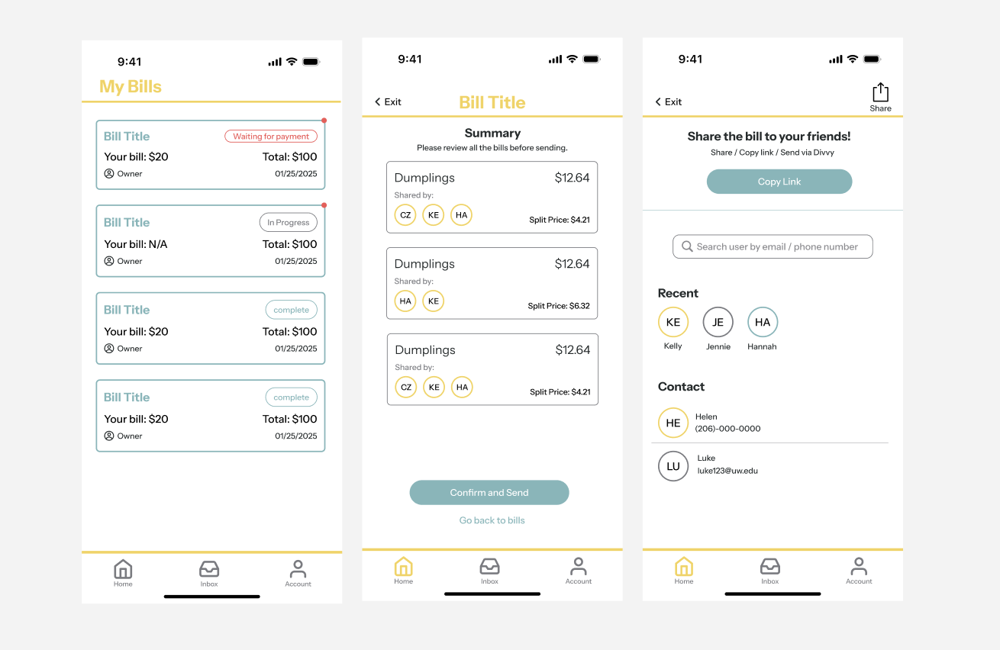
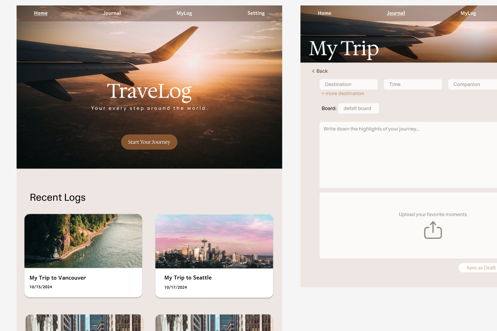

In ProgressDesigning and developing an interactive 2D platform game for the University of Washington iSchool Alumni Team. This personalized birthday experience aims to increase alumni engagement, participation, and long-term community involvement through gamification.
Collaborated with a cross-functional capstone team and stakeholders to define project goals and develop a minimum viable product (MVP). Led UI/UX design and contributed to Unity development, creating intuitive gameplay mechanics and visually engaging interfaces.
Applied mobile-first and user-centered design principles to ensure accessibility and usability. Key considerations included personalization, inclusive representation, strong visual contrast, and short session lengths of approximately five minutes to align with user behavior. Iterated on designs based on stakeholder feedback and usability insights.

Designed a website prototype inspired by Google’s NotebookLM, focused on making podcast content more interactive, customizable, and easier to navigate. The goal was to transform passive listening into a more structured and engaging learning experience.
As the UX Researcher, I conducted competitor analysis and defined user needs around customization and information organization. I developed user personas, site maps, and a clear taxonomy system to structure content intuitively. From there, I created wireframes and outlined development and content roadmaps to support implementation. This project strengthened my understanding of how information architecture and thoughtful UX decisions can significantly improve user engagement with long-form content.
View Proposal Presentation ↗
Created a high-fidelity prototype of a mobile app designed to help friends split grocery and restaurant bills more transparently and reduce the awkwardness that often comes with handling shared expenses.
Conducted market research on existing bill-splitting platforms to identify usability gaps and unmet user needs. Synthesized findings into clear opportunity areas that would differentiate our solution. Developed user stories and mapped user journeys to better understand key friction points in real-life scenarios, such as uneven item sharing, forgotten payments, and unclear expense tracking. These insights directly informed feature prioritization and interaction design.
View Figma Prototype ↗
Built a full-stack travel diary web application enabling users to create, store, and manage personalized travel logs. Implemented user authentication and secure login flows using Firebase Authentication, and structured Firestore databases to store user-generated content tied to individual accounts. Designed data models to support scalable entry creation and retrieval.
Designed a conceptual FaceTime feature aimed at strengthening relationships by helping users discover shared interests and activities.
The project focused specifically on siblings with large age gaps, a dynamic that often creates challenges in maintaining connection due to differing life stages, routines, and interests. Conducted market research and surveyed individuals with significant sibling age differences to better understand their communication patterns, barriers to staying connected, and what types of shared activities feel authentic rather than forced. Synthesized findings into key insight themes that informed feature direction. Based on research insights, designed lightweight interaction prompts and shared discovery features that reduced pressure for structured conversation and instead encouraged organic connection.
View Figma Prototype ↗ Read Paper Write Up ↗